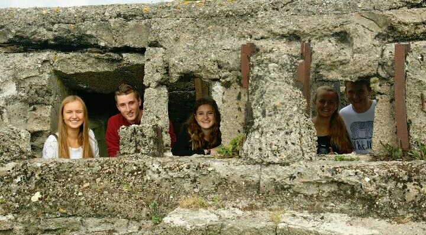

About
Ik ben Lisa, en ik geniet graag van het leven.
In deze blog vertel ik dus ook alles wat ik beleef,
en de moeite waard vind om dit de delen met de wereld en met jou.
Al deze dingen die ik deel zijn niet alleen voor u als lezer
maar dient ook voor mezelf om later terug te kijken naar al deze mooie herinneringen.
Als jij een trouwe lezer bent hoop ik dat je er enorm van geniet,
en probeer ik mijn uiterste best te doen om zoveel mogelijk te posten.
ME


Pukkelpop
4 zalige dagen
Gepost op 22/08
Pukkelpoooop! Ik ben net 1 dag terug van de beste 4 dagen van het jaar. Pukkelpop 2015 zal voor altijd in mijn herinneringen blijven.
>> Lees verder
#Friends #Vacation #Festival
Gepost in: Vriendschap
Westende
Beste vriendschap
Gepost op 15/07
Vrienden voor het leven. Ik ben net terug van een weekend aan de zee met de beste vriendengroep. We zijn vanalles gaan doen en nog veel meer.
>> Lees verder
#Friends #Vacation #Beach
Gepost in: Vriendschap
Griekenland
Griekenland in the summaaa
Gepost op 31/06
Griekenland in de summaaaa! Onze eindreis van het volledige middelbaar is net achter de rug. Dit was zonder twijfel de beste reis en ervaring ooit.
>> Lees verder
#Friends #Vacation #Greece
Gepost in: Vriendschap
Current Post
Westhoek
Family First
Gepost op 26/05
Familie komt altijd, en blijft altijd op de eerste plaats staan bij mij. Het is iets waar je niet zonder kan, en soms toch wel even genoeg van hebt. Maar ze zijn er wel altijd om op terug te vallen en je kan er altijd op rekenen. Dit klinkt cliché, maar het is dan ook meer dan waar.
>> Lees verder
#Family #Trip #Westhoek
Gepost in: Familie